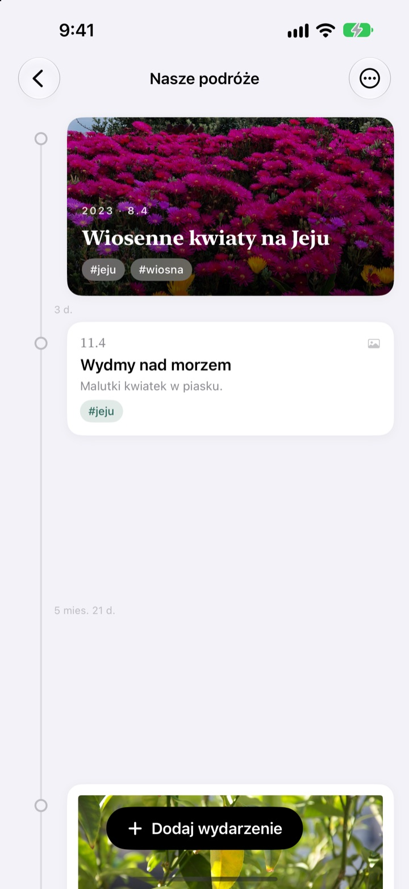
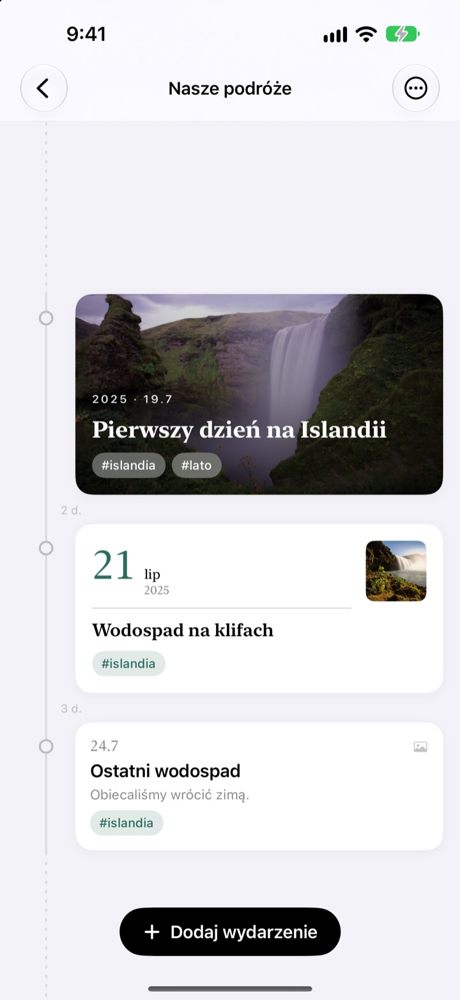
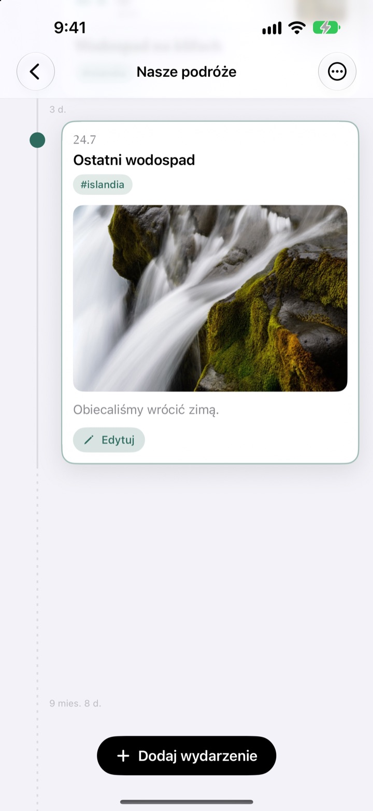
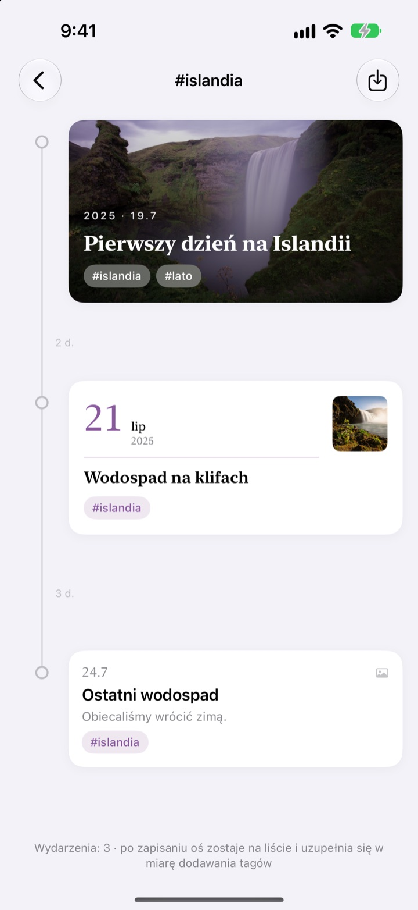
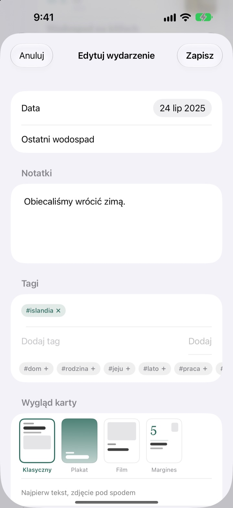

Oś czasu, która
rozciąga się z czasem
Trzy dni i pięć dni stoją w proporcji 3:5. Długa przerwa, na przykład dwa lata i cztery miesiące, składa się w linię przerywaną. Już po odstępach widać, jak wtedy płynął czas.
Wszystkie funkcje są darmowe. Na iPhone'a i iPada.

Rozciągnij odstępy sam
Każdy przycisk dodaje nowe wydarzenie po ostatnim. Odstępy liczone są według tej samej zasady co w aplikacji.
W bibliotece zdjęć nie widać czasu
Biblioteka zdjęć układa wszystko według daty, ale trzy dni i dwa lata zajmują w niej jeden taki sam krok. Yeoul rozstawia wydarzenia tak daleko, ile czasu minęło między nimi, więc od razu widać, kiedy działo się dużo, a kiedy było cicho.
Odstęp to czas
Cała oś ma jedną skalę: ten sam okres ma tę samą długość w każdym miejscu ekranu. Przy każdym odstępie widnieje prawdziwy czas, na przykład 3 d. albo 5 mies. 21 d.
Bardzo bliskie wydarzenia i tak dostają trochę miejsca, a bardzo długie przerwy składają się w linię przerywaną.

Znajdzie zdjęcia z tamtego dnia
Ustaw datę wydarzenia i stuknij Znajdź powiązane zdjęcia, a zobaczysz zdjęcia zrobione tego dnia. Nic nie pasuje? Wybierz samodzielnie i gotowe.
Stuknij wydarzenie na osi, a zdjęcie i tekst rozwiną się w tym samym miejscu.

Jeden tag zbiera rozrzucone chwile
Dodaj wydarzeniom tag, na przykład #Islandia, stuknij go, a wszystkie wydarzenia z tym tagiem, ze wszystkich osi, zbiorą się w nowej.
Zapisz ją, a zostanie na liście i sama przyjmie kolejne wydarzenia z tym tagiem.

Do każdej chwili pasująca karta
Klasyczny stawia na tekst, Plakat wypełnia kartę zdjęciem, Film obramowuje je jak odbitkę, a Margines oddaje scenę dużej dacie. Podgląd zmienia się od razu.

Zaczynasz w trzech krokach
- 1
Utwórz oś czasu
Pierwszy rok dziecka, związek, podróż: każda z nazwą i kolorem.
- 2
Dodaj wydarzenia
Wpisz datę i tytuł, dołącz zdjęcie z tamtego dnia.
- 3
Dodaj tagi
Wydarzenia z tym samym tagiem spotkają się, nawet z różnych osi.
Cztery wyglądy kart
- Klasyczny
- Najważniejszy jest tekst, zdjęcie jest pod nim.
- Plakat
- Zdjęcie wypełnia całą kartę, a na nim duży tytuł. Bez zdjęcia karta przyjmuje kolor osi.
- Film
- Zdjęcie z ramką jak odbitka, czcionka maszyny do pisania i stempel z datą.
- Margines
- Duża cyfra daty i małe zdjęcie. Tu główną rolę grają słowa.
Nowe wydarzenie zaczyna z tym samym wyglądem co najnowsza karta na danej osi.
Wszystkie funkcje są darmowe
Za darmo
- Dowolnie wiele osi czasu z nazwą i kolorem
- Zdjęcia, opisy i tagi przy każdym wydarzeniu
- Szukanie zdjęć z dnia wydarzenia
- Zapisane osie czasu tagów
- Cztery wyglądy kart
- Synchronizacja iPhone'a i iPada przez iCloud
- Zapisywanie przez Skróty i Siri
Wesprzyj twórcę
- Wybierz mały, średni lub duży napiwek
- Niczego nie odblokowuje. To po prostu podziękowanie
Znajdziesz go w ustawieniach aplikacji, kiedy zechcesz.
Bez reklam i bez subskrypcji.
Częste pytania
Dlaczego odstępy między wydarzeniami są tak różne?
Yeoul rozstawia wydarzenia według czasu, który naprawdę minął. Wszystkie odstępy mają tę samą skalę, więc trzy dni i pięć dni stoją w proporcji 3:5. Bardzo bliskie wydarzenia mają minimalny odstęp, żeby się nie nakładały, a bardzo długie przerwy składają się w linię przerywaną z prawdziwym czasem, na przykład 2 r. 4 mies.
Nie widzę zdjęć z tamtego dnia.
Szukanie zdjęć po dacie wymaga dostępu do zdjęć. Zezwól na niego w Ustawienia > Yeoul > Zdjęcia. Yeoul szuka zdjęć zrobionych od północy do północy tego dnia, w strefie czasowej urządzenia. Jeśli nie chcesz dawać dostępu, stuknij Wybierz samodzielnie tuż poniżej.
Czym jest oś czasu tagu?
Stuknij tag przy wydarzeniu, a Yeoul zbierze w jedną oś wszystkie wydarzenia z tym tagiem ze wszystkich Twoich osi. Te, które często oglądasz, możesz zapisać na liście. Nic nie jest kopiowane: zmienisz oryginalne wydarzenie, a zmiana pojawi się i tu, a usunięcie osi tagu nie usuwa wydarzeń.
Dlaczego nie mogę dodać wydarzenia na osi tagu?
Oś tagu to widok zebrany według tagu, a nie miejsce przechowywania wydarzeń, więc nie da się ustalić, do której osi należałoby nowe wydarzenie. Dodaj je na jego własnej osi z tagiem, a pojawi się tu samo.
Czy mogę coś zapisać bez otwierania aplikacji?
Tak. Użyj Zapisz wydarzenie w aplikacji Skróty albo z Siri i wybierz tylko oś i tytuł. Bez daty zapisze się bieżący czas.
Czy zobaczę osie na innych urządzeniach?
Tak, na każdym iPhonie i iPadzie zalogowanym do iCloud tym samym kontem Apple. Sprawdź w Ustawienia > Twoje imię > iCloud, czy iCloud jest włączony. Zależnie od połączenia zmiany mogą pojawić się z lekkim opóźnieniem.
Jak usunąć swoje zapisy?
Przesuń oś w lewo na liście albo stuknij Edycja. Razem z osią usuwane są jej wydarzenia. To, co zostało w iCloud, usuniesz w zarządzaniu pamięcią w ustawieniach iCloud.
Czy twórca widzi moje zapisy?
Nie. Zapisy i zdjęcia są przechowywane tylko na Twoich urządzeniach i w Twoim własnym iCloud, twórca ich nie widzi. Szczegóły znajdziesz w polityce prywatności poniżej.
Jak zgłosić błąd lub zaproponować funkcję?
Prosto z ustawień aplikacji, mailem albo na Instagramie @lee25_ios. Model urządzenia, wersja iOS i opis sytuacji pomogą nam szybciej pomóc.
Pytania albo pomysły? Napisz na leeo@kakao.com.